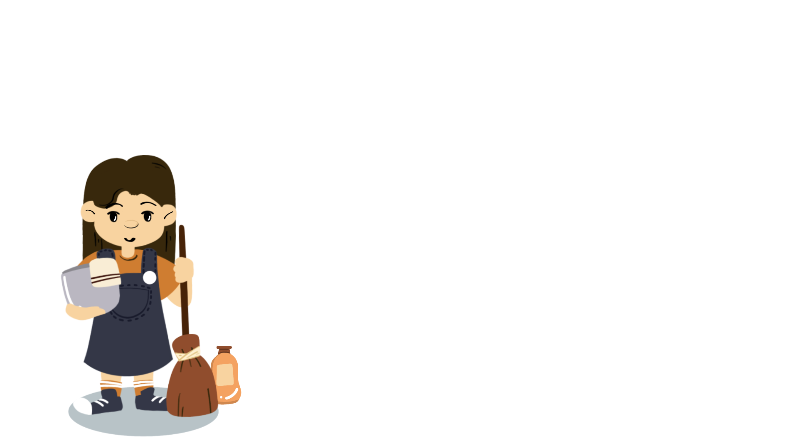
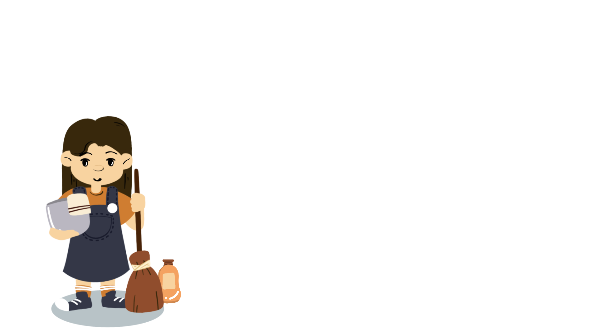
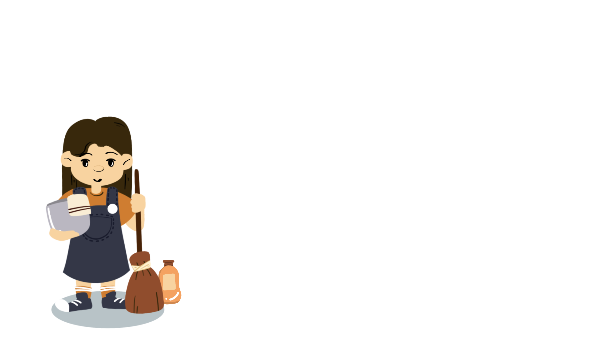
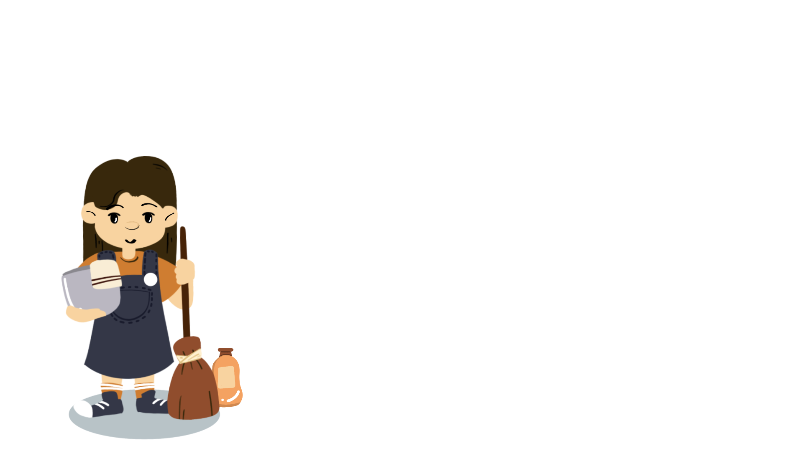

จำนวนไรฝุ่น
ลด/ทำลาย สารก่อภูมิแพ้
ลด/หลีกเลี่ยง การสัมผัส
ในการกำจัดไรฝุ่น ปัจจุบันยังไม่พบวิธีใดเพียงวิธีเดียวที่ให้ผลชัดเจน ต้องใช้หลายวิธีร่วมกัน สามารถเลือกใช้ให้เหมาะสมกับแต่ละครอบครัว ผลลัพท์ที่ดีขึ้นอยู่กับว่าเราได้นำไปปฏิบัติอย่างสม่ำเสมอหรือไม่ และการดูแลรักษาจะได้ผลดีนั้นต้องอาศัยความร่วมมือระหว่างตัวผู้ป่วยและแพทย์ผู้ดูแล รวมทั้งผู้ปกครองถ้าผู้ป่วยเป็นเด็กเล็ก โดยมีหลักการในการรักษาโรคภูมิแพ้ ดังนี้
การหลีกเลี่ยงการสัมผัสสารก่อภูมิแพ้ แนะนำให้ผู้ป่วยกำจัดหรือลดปริมาณสารก่อภูมิแพ้ที่อยู่ในสิ่งแวดล้อมบริเวณรอบ ๆ อย่างมุ่งมั่นและจริงจัง
ยาที่ใช้ในโรคภูมิแพ้แบ่งได้เป็น 2 ประเภท คือ ยาที่ใช้เพื่อควบคุมอาการ และยาที่ใช้บรรเทาอาการเมื่อมีอาการกำเริบ ขนาดยาอาจปรับเปลี่ยนตามความรุนแรงของโรคที่ผู้ป่วยเป็น ดังนั้นจึงควรเข้ารับการตรวจวินิฉัยตามที่แพทย์นัดทุกครั้ง
พิจารณาใช้ในผู้ป่วยที่การรักษาด้วยยาไม่ได้ผลดีและยังมีอาการกำเริบอยู่ โดยฉีดสารสกัดจากสารก่อภูมิแพ้ที่ทำให้ผู้ป่วยมีอาการเข้าไปใต้ผิวหนังในปริมาณน้อย ๆ เป็นระยะ ๆ เพื่อกระตุ้นให้ผู้ป่วยเคยชินต่อสารก่อภูมิแพ้นั้น และลดอาการแพ้ได้
อย่างไรก็ตาม เพื่อสุขภาพของตนเองและคนในครอบครัว แนะนำว่าที่นอนควรได้รับความใส่ใจเป็นพิเศษเพราะเราต้องพักผ่อนเกือบ 8 ชั่วโมงต่อวัน การจะได้ผลลัพท์ที่ดีขึ้นอยู่กับว่าเราได้นำไปปฏิบัติอย่างสม่ำเสมอหรือไม่
- ควบคุมได้ ก็ป้องกันได้ -
- ควบคุมได้ ก็ป้องกันได้ -
- ควบคุมได้ ก็ป้องกันได้ -
- ควบคุมได้ ก็ป้องกันได้ -
- ควบคุมได้ ก็ป้องกันได้ -
- ควบคุมได้ ก็ป้องกันได้ -
- ควบคุมได้ ก็ป้องกันได้ -
- ควบคุมได้ ก็ป้องกันได้ -
- ควบคุมได้ ก็ป้องกันได้ -
- ควบคุมได้ ก็ป้องกันได้ -
- ควบคุมได้ ก็ป้องกันได้ -
- ควบคุมได้ ก็ป้องกันได้ -
- ผ้ากันไรฝุ่น
- น้ำยาซักผ้า
- เครื่องดูดฝุ่น
- เครื่องดูดความชื้น
- เครื่องฟอกอากาศ
-
สเปรย์กำจัดไรฝุ่นชนิดที่เป็นสาร
สกัดจากธรรมชาติ